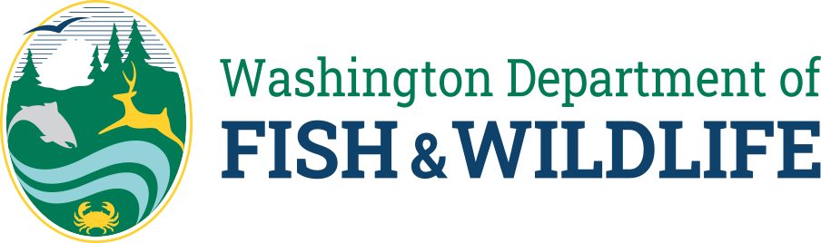

Publications
Client Edition
Home
Species & Habitats
Fishing & Shellfishing
Hunting
Licenses & Permits
Places to go
Publication Map
WDFW Publication Map
Interactive public map of publication-linked coordinate points across Washington.
Search
Species
All species
Year from
Year to
Reset